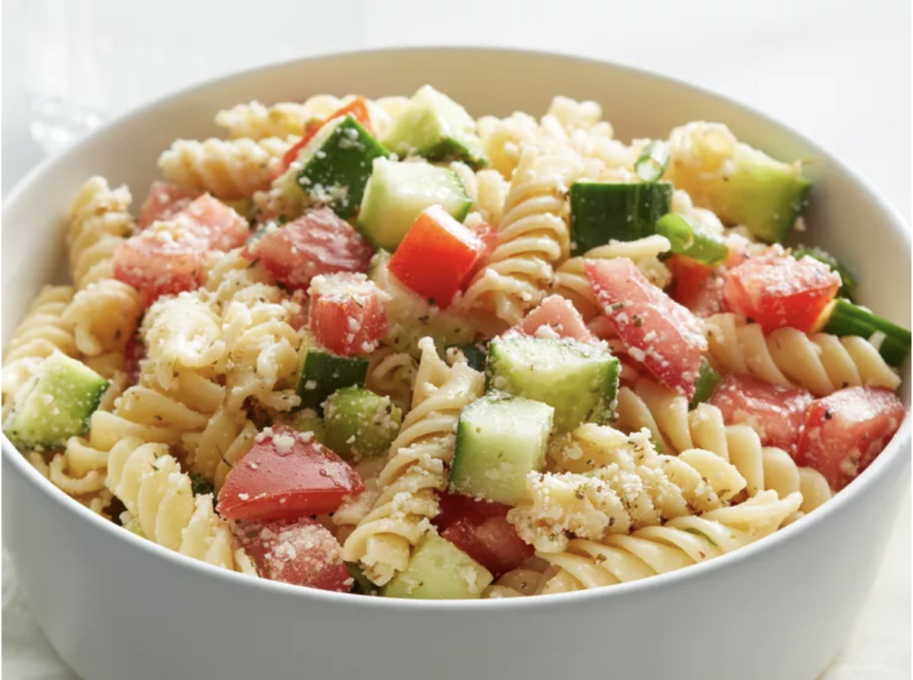

Home
Pasta Salad

Description
An easy pasta salad with Italian dressing, simple yet very yummy. Almost any type of pasta may be used. Best if left to sit overnight.
Ingredients
- 1 (16 ounce) package uncooked rotini pasta
- 1 (16 ounce) bottle Italian salad dressing
- 2 medium cucumbers, chopped
- 6 medium tomatoes, chopped
- 1 bunch green onions, chopped
- 4 ounces grated Parmesan cheese
- 1 tablespoon Italian seasoning
Steps
- Gather all ingredients.
- Bring a large pot of lightly salted water to a boil. Place pasta in the pot, cook for 8 to 12 minutes, until al dente, and drain.
- Toss cooked pasta with Italian dressing, cucumbers, tomatoes, and green onions in a large bowl.
- Mix Parmesan cheese and Italian seasoning in a small bowl, and gently mix into the salad.
- Refrigerate pasta salad until chilled for best results, at least 30 minutes before serving. Enjoy!